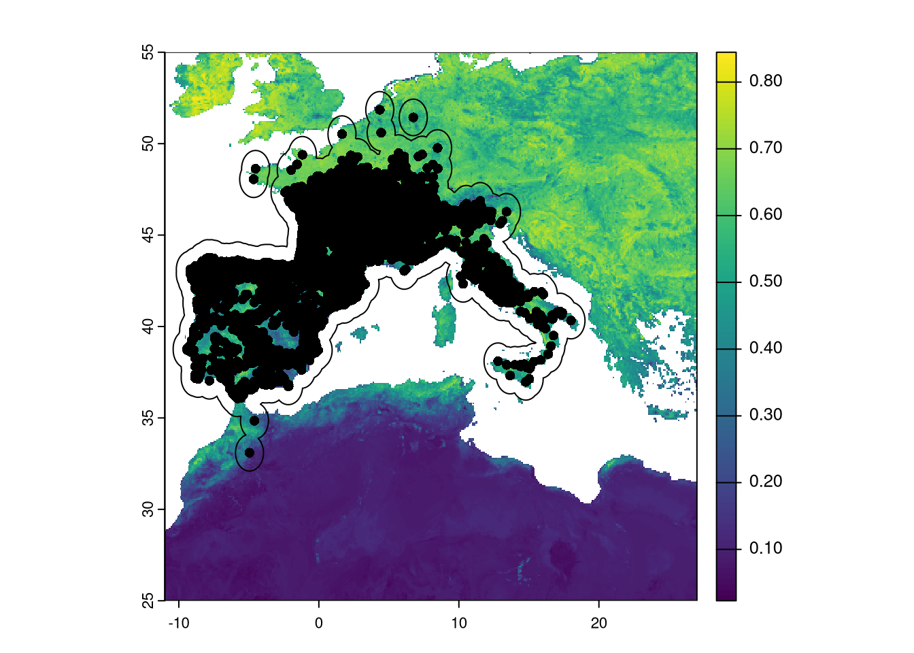
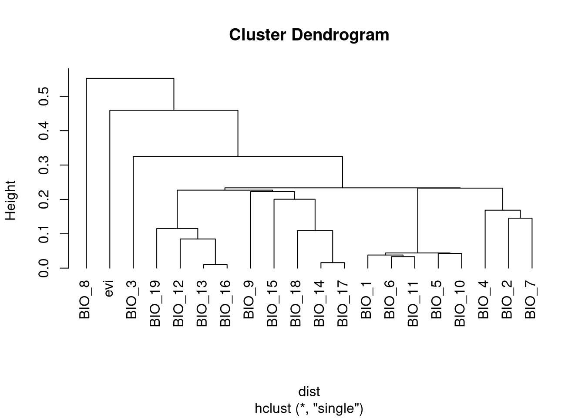

5 Chapter 4 - Variable selection for modelling
It is common practice to collect all predictor variables available that are deemed relevant for our study system and hypotheses. These include direct variables (like temperature) and processed variables (like distances to habitat categories). However, it is rarely a good idea to include all variables into the modeling process.
To address this, we can reduce the number of variables by checking the pairwise correlation among them. Correlated variables will bring mostly the same information to the model and might add a confounding effect when analyzing the variable importance in the models. There is no universal maximum correlation value for modeling, but avoiding correlations higher than 0.7 is generally considered sufficient. We will set this target for this example.
We will only need terra library for this.
We need the raster variables created in Chapter 2 and the optimised presence data from Chapter 3.
evi <- rast("data/rasters/evi.tif")
clim <- rast("data/rasters/climate.tif")
pres <- read.table("data/species/speciesPresence_v2.csv", sep="\t", header=TRUE)The rasters are fully aligned (Chapter 2) and we can stack them together. Having the 20 variables (19 bioclimatic + 1 EVI) in the same object will simplify the process of selection.
## [1] "BIO_1" "BIO_2" "BIO_3" "BIO_4" "BIO_5" "BIO_6" "BIO_7" "BIO_8"
## [9] "BIO_9" "BIO_10" "BIO_11" "BIO_12" "BIO_13" "BIO_14" "BIO_15" "BIO_16"
## [17] "BIO_17" "BIO_18" "BIO_19" "evi"5.1 Define a training area with a buffer
We need to define a training area for the modeling. This restricts the available area from where we retrieve data for model calibration, including both presence data and pseudo-absence data. There are many ways to select this area, but we will follow a strategy that defines a spatial buffer around the presence points. This buffer limits the area from which we can retrieve environmental data from the rasters. A buffer should provide enough environmental variation for the modeling. However, a very wide buffer can pose problems, as we might include areas that are far from the species’ optimal conditions. For instance, if we model a species only present in the Iberian Peninsula, but we choose a buffer large enough to include Iceland, we will be providing useless environmental variation to the model.
In this chapter, the buffer will define the training area that will provide environmental variation to the model and where we should check the correlations. Although we have more environmental data outside the buffer, that data will not be relevant for the model and hence should not be used for correlation analysis.
Here, we define the buffer size as 1 degree, which is roughly equivalent to ~110,000 meters.
NOTE: The buffer defined here will be important for Chapter 6 when we build the models. We will have to define the same buffer size.”
NOTE on spatial data in R: When we open the presence data in R with the read.table command, we just create a data frame (like a spreadsheet in Excel). Although we might have columns for longitude and latitude, they are just numbers organized in two columns. Since creating buffers is a spatial operation, we have to inform R that the presences are spatial points. In other words, we have to formalize that the data frame is, in fact, a list of spatial points. This can be done with the vect command from the terra package, which is also used to open spatial data files such as shapefiles. We must define which columns store the longitude and latitude (in our case, the ‘x’ and ‘y’ columns).
Now we can define our buffers with a 1-degree radius. The buffer function creates an individual buffer around each presence, and we then aggregate them into a single polygon.
To check how everything is looking, we can plot presence and buffers over the EVI variable.
 As we can see in the figure, the buffer is created around presences. This includes ocean areas which will be ignored later as they provides only NAs.
We can use the buffer to extract the environmental data for all 20 variables.
## BIO_1 BIO_2 BIO_3 BIO_4 BIO_5 BIO_6 BIO_7 BIO_8 BIO_9 BIO_10 BIO_11 BIO_12
## 1 NA NA NA NA NA NA NA NA NA NA NA NA
## 2 NA NA NA NA NA NA NA NA NA NA NA NA
## 3 NA NA NA NA NA NA NA NA NA NA NA NA
## 4 NA NA NA NA NA NA NA NA NA NA NA NA
## 5 NA NA NA NA NA NA NA NA NA NA NA NA
## 6 NA NA NA NA NA NA NA NA NA NA NA NA
## BIO_13 BIO_14 BIO_15 BIO_16 BIO_17 BIO_18 BIO_19 evi
## 1 NA NA NA NA NA NA NA NA
## 2 NA NA NA NA NA NA NA NA
## 3 NA NA NA NA NA NA NA NA
## 4 NA NA NA NA NA NA NA NA
## 5 NA NA NA NA NA NA NA NA
## 6 NA NA NA NA NA NA NA NAThere are many NAs that come from ocean pixels. We should remove those rows and keep only the valid data before proceeding with correlations. Since the rasters are fully aligned (Chapter 2), including the No Data mask, we can use the NAs from a single raster to filter all other variables.
## BIO_1 BIO_2 BIO_3 BIO_4 BIO_5 BIO_6 BIO_7 BIO_8
## 8 9.446667 5.786667 29.61447 509.8863 20.14000 0.6000000 19.54000 10.74000
## 18 9.408896 5.943919 30.25103 508.3113 20.18378 0.5351351 19.64865 10.68108
## 19 9.499875 6.132250 30.78748 512.5685 20.44500 0.5270000 19.91800 10.69300
## 20 9.612041 6.353250 31.41441 520.0265 20.71900 0.4950000 20.22400 10.71300
## 31 9.459243 6.206061 31.10382 510.2022 20.35273 0.4000000 19.95273 10.69364
## 32 9.627584 6.378666 31.63864 514.4630 20.68200 0.5210000 20.16100 10.72333
## BIO_9 BIO_10 BIO_11 BIO_12 BIO_13 BIO_14 BIO_15 BIO_16 BIO_17
## 8 5.166667 15.74667 3.450000 798 99 40 30.06747 287 143
## 18 5.153153 15.66441 3.411712 799 99 41 30.21513 288 143
## 19 5.267500 15.77517 3.431667 803 98 41 29.25621 286 144
## 20 5.363167 15.93750 3.436833 825 98 43 27.84145 288 148
## 31 11.040606 15.70848 3.421818 818 101 42 30.15000 293 146
## 32 5.438000 15.90683 3.519333 813 101 41 29.37465 289 147
## BIO_18 BIO_19 evi
## 8 212 192 0.5183802
## 18 211 192 0.4421933
## 19 214 192 0.6296464
## 20 190 195 0.5911894
## 31 213 198 0.4945980
## 32 182 195 0.6150222Now we have only data! We can proceed with Pearson correlations.
5.2 Calculate pairwise correlations
Getting the Pearson’s correlation scores for each pair of variables is very easy in R. We have all raster data for the training area (buffer) organized in a data frame where each column is a different variable. We just calculate correlations based on that table.
## BIO_1 BIO_2 BIO_3 BIO_4 BIO_5 BIO_6 BIO_7 BIO_8 BIO_9 BIO_10
## BIO_1 1.000 0.429 0.516 -0.087 0.870 0.896 0.217 0.410 0.737 0.956
## BIO_2 0.429 1.000 0.675 0.433 0.767 0.073 0.855 0.129 0.422 0.566
## BIO_3 0.516 0.675 1.000 -0.345 0.520 0.458 0.202 0.020 0.538 0.420
## BIO_4 -0.087 0.433 -0.345 1.000 0.325 -0.476 0.831 0.201 -0.181 0.207
## BIO_5 0.870 0.767 0.520 0.325 1.000 0.585 0.661 0.360 0.676 0.957
## BIO_6 0.896 0.073 0.458 -0.476 0.585 1.000 -0.222 0.275 0.690 0.737
## BIO_7 0.217 0.855 0.202 0.831 0.661 -0.222 1.000 0.178 0.174 0.468
## BIO_8 0.410 0.129 0.020 0.201 0.360 0.275 0.178 1.000 -0.046 0.448
## BIO_9 0.737 0.422 0.538 -0.181 0.676 0.690 0.174 -0.046 1.000 0.685
## BIO_10 0.956 0.566 0.420 0.207 0.957 0.737 0.468 0.448 0.685 1.000
## BIO_11 0.962 0.304 0.587 -0.349 0.739 0.967 -0.006 0.314 0.764 0.844
## BIO_12 -0.514 -0.489 -0.263 -0.240 -0.630 -0.340 -0.443 -0.319 -0.382 -0.583
## BIO_13 -0.242 -0.348 -0.096 -0.292 -0.387 -0.100 -0.373 -0.219 -0.131 -0.326
## BIO_14 -0.734 -0.544 -0.472 -0.034 -0.766 -0.585 -0.380 -0.256 -0.678 -0.746
## BIO_15 0.627 0.385 0.431 -0.118 0.583 0.539 0.201 0.134 0.609 0.595
## BIO_16 -0.272 -0.375 -0.101 -0.322 -0.425 -0.112 -0.407 -0.251 -0.155 -0.365
## BIO_17 -0.719 -0.530 -0.468 -0.019 -0.747 -0.582 -0.359 -0.270 -0.636 -0.725
## BIO_18 -0.751 -0.511 -0.512 0.059 -0.760 -0.658 -0.304 -0.069 -0.777 -0.736
## BIO_19 -0.100 -0.301 0.103 -0.497 -0.293 0.114 -0.458 -0.426 0.097 -0.242
## evi -0.230 -0.487 -0.269 -0.193 -0.392 -0.039 -0.435 -0.055 -0.344 -0.302
## BIO_11 BIO_12 BIO_13 BIO_14 BIO_15 BIO_16 BIO_17 BIO_18 BIO_19 evi
## BIO_1 0.962 -0.514 -0.242 -0.734 0.627 -0.272 -0.719 -0.751 -0.100 -0.230
## BIO_2 0.304 -0.489 -0.348 -0.544 0.385 -0.375 -0.530 -0.511 -0.301 -0.487
## BIO_3 0.587 -0.263 -0.096 -0.472 0.431 -0.101 -0.468 -0.512 0.103 -0.269
## BIO_4 -0.349 -0.240 -0.292 -0.034 -0.118 -0.322 -0.019 0.059 -0.497 -0.193
## BIO_5 0.739 -0.630 -0.387 -0.766 0.583 -0.425 -0.747 -0.760 -0.293 -0.392
## BIO_6 0.967 -0.340 -0.100 -0.585 0.539 -0.112 -0.582 -0.658 0.114 -0.039
## BIO_7 -0.006 -0.443 -0.373 -0.380 0.201 -0.407 -0.359 -0.304 -0.458 -0.435
## BIO_8 0.314 -0.319 -0.219 -0.256 0.134 -0.251 -0.270 -0.069 -0.426 -0.055
## BIO_9 0.764 -0.382 -0.131 -0.678 0.609 -0.155 -0.636 -0.777 0.097 -0.344
## BIO_10 0.844 -0.583 -0.326 -0.746 0.595 -0.365 -0.725 -0.736 -0.242 -0.302
## BIO_11 1.000 -0.430 -0.154 -0.701 0.640 -0.174 -0.689 -0.742 0.039 -0.192
## BIO_12 -0.430 1.000 0.899 0.714 -0.251 0.915 0.773 0.741 0.784 0.369
## BIO_13 -0.154 0.899 1.000 0.371 0.151 0.990 0.453 0.480 0.864 0.182
## BIO_14 -0.701 0.714 0.371 1.000 -0.800 0.396 0.984 0.891 0.255 0.541
## BIO_15 0.640 -0.251 0.151 -0.800 1.000 0.133 -0.766 -0.617 0.186 -0.501
## BIO_16 -0.174 0.915 0.990 0.396 0.133 1.000 0.468 0.502 0.885 0.196
## BIO_17 -0.689 0.773 0.453 0.984 -0.766 0.468 1.000 0.891 0.318 0.515
## BIO_18 -0.742 0.741 0.480 0.891 -0.617 0.502 0.891 1.000 0.204 0.423
## BIO_19 0.039 0.784 0.864 0.255 0.186 0.885 0.318 0.204 1.000 0.177
## evi -0.192 0.369 0.182 0.541 -0.501 0.196 0.515 0.423 0.177 1.000The correlation matrix provides the correlation score for each pair of variables. It is symmetric (the correlation of A to B is the same as B to A) and the diagonal gives the self-correlation, which is obviously 1.
This matrix is not easy to use for the variable elimination process. Remember that we set a goal of not having an absolute correlation higher than 0.7, so we should find a way to select important variables that will provide a new set where the maximum pairwise correlation won’t exceed that value.
One of the best and simplest ways is to organize the variables in a dendrogram by using a hierarchical clustering method. We should group in the same cluster variables that are similar to each other (highly correlated). To do this, we need to transform the correlation score into a dissimilarity or distance matrix, where increasing values will reflect that variables are less similar (low correlation). For that we need to:
- Get the absolute value of the correlation because we just care about the magnitude of the correlation and not the direction (two variables that are correlated at -0.87 provide the same information as those that are correlated at +0.87). At this point, the matrix will have values from 0 (low correlation, thus highly distant) to 1 (high correlation, showing high similarity and low distance).
- Ensure that lower values reflect similarity (high correlation) and higher values describe dissimilarity (low correlation). To achieve this, we need to invert the values by subtracting the absolute value from 1.
We need to discard one of the symmetrical sides and the diagonal. An easy way to do this is to convert the matrix to a dist object:
5.3 Clustering and selection
With the new distance matrix we can start the clustering process. We choose the method ‘single’ so every cluster is grouped by the minimum distance/correlation.

We can select 5 variables, one from each major group in the tree. Variables can be selected based on how easily they can be interpreted in terms of the niche of the species. In this case, we select:
- evi
- BIO_8: Mean daily Temperature Wettest Quarter
- BIO_3: Isothermality
- BIO_12: Annual Precipitation Amount
- BIO_1: Annual Temperature
We select the vars using the variables names we defined previously and create a new raster with only those variables.
We select the variables using the names we defined previously and create a new raster with only those variables.
## evi BIO_8 BIO_3 BIO_12 BIO_1
## evi 1.00000000 -0.05473548 -0.26896220 0.3687846 -0.2295176
## BIO_8 -0.05473548 1.00000000 0.01993914 -0.3192758 0.4101052
## BIO_3 -0.26896220 0.01993914 1.00000000 -0.2634080 0.5157017
## BIO_12 0.36878463 -0.31927583 -0.26340797 1.0000000 -0.5142887
## BIO_1 -0.22951757 0.41010518 0.51570173 -0.5142887 1.0000000The maximum correlation does not pass the value of 0.51, which is generally acceptable.
We save the selected variables to a file named final_vars.tif. You can check the variables in any GIS.